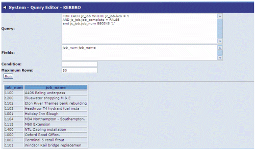

The Query Editor allows you to try out 4GL queries against the
To use the query editor simply enter the query, and any field required (space separated) :
| Condition Field - | A function that determines whether a record should be included or not. The function returns a logical value: yes to include the record, no to exclude it. |
| Maximum Rows ? | Allows the query to fun faster by only displaying a maximum number of rows per query. |

The system will return an error if any part of the query is incorrect - and a sample of data if the query compiles OK.